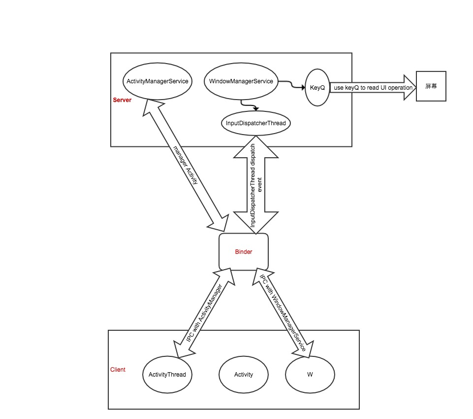

浅析Android apk的运行过程、消息机制及线程
更新日期:
基础
要介绍一个AP的运行过程，首先需要介绍一下Android Framework的框架
框架包含三个主要部分：服务端，客户端（.apk）和Linux驱动Binder，如下图。

服务端
服务端包含两个重要类，ActivityManagerService（AmS）和WindowManagerService（WmS）。
- AmS主要是负责管理所有应用程序中的Activity。
- WmS的作用是为所有的应用程序分配窗口，并管理这些窗口。包括分配窗口的大小，调节各窗口的叠放次序，隐藏或显示窗口。此外，WmS包括两个消息处理类：KeyQ类和InputDispatcherThread类。keyQ对象建立后，会启动一个线程，不断的读取用户的UI操作信息，比如触摸屏，按键等，并把这些消息放入消息队列QueueEvent类中；InputDispatcherThread对象建立后，也会立即启动一个线程，该线程不断地从 QueueEvent中取出用户信息，并进行一定的过滤，过滤后，再将这些信息发送给当前活动的客户端程序。
客户端
客户端就是Android应用程序apk，客户端包括一些重要的类。
- ActivityThread类：该类为应用程序的主线程类，所有的apk程序都有且仅有一个ActivityThread类，程序的入口是该类中的static main()函数。
- Activity类：该类为api程序的一个最小运行单元，一个apk程序中可以包含多个Activity对象，ActivityThread主类会根据用户操作选择运行哪个Activity对象。
- ApplicationThread类：该类主要是负责与AmS通信，接受远程AmS的IPC调用。
- W类：该类主要负责与WmS通信，接收远程远程WmS的IPC调用。
Linux驱动Binder
Binder驱动的作用是提供跨进程的消息传递。
APK程序的运行过程
- 某一个APK程序启动时，从类ActivityThread类的静态函数main()开始执行。
- 调用prepareMainLooper()为UI线程创建一个消息队列：MessageQueue。
- 创建一个ActivityThread对象，创建对象过程中，会创建一个Handler对象H和ApplicationThread对象（此对象负责与AmS通信）。
- UI主线程调用Looper.loop()方法进入消息循环体，此时，程序已经跑起来了，UI线程不断地从消息队列里读取消息并处理消息。
- 当客户端接收AmS发送的消息，需要启动一个Activity时，客户端会创建一个Activity对象，接下来会做一些界面的创建工作；在创建完界面后，需要将界面显示到屏幕上，于是，调用WindowManager类，WindowManager创建一个ViewRoot对象（继承自Handler，本质就是Handler）和W类的对象（此对象负责与WmS通信），再调用WmS提供的远程接口完成添加一个窗口并显示到屏幕上。
消息机制：
- 消息进入MessageQueue
- ApplicationThread对象本质是一个线程，负责与AmS通信，获得AmS的消息后，通过主线程的Handler对象H将消息发送到MessageQueue。
- W类对象本质也是一个线程，负责与WmS通信，获得WmS的消息后，通过ViewRoot对象（本质是Handler）将消息发送到MessageQueue。
- 消息处理
- 程序中有一个消息队列MessageQueue，UI线程进入Loop循环，不断从消息队列中读取消息处理消息。
- Looper从MessageQueue取出消息msg，调用消息的msg.target.dispatchMessage(msg)来让消息指定的Handler处理消息，本质就是那个Handler发送消息，这个消息就是哪个Handler来处理。
线程
一个Android程序运行，至少存在3个线程：UI线程，与AmS通信的线程（ApplicationThread对象），与WmS通信的线程（W类对象）.